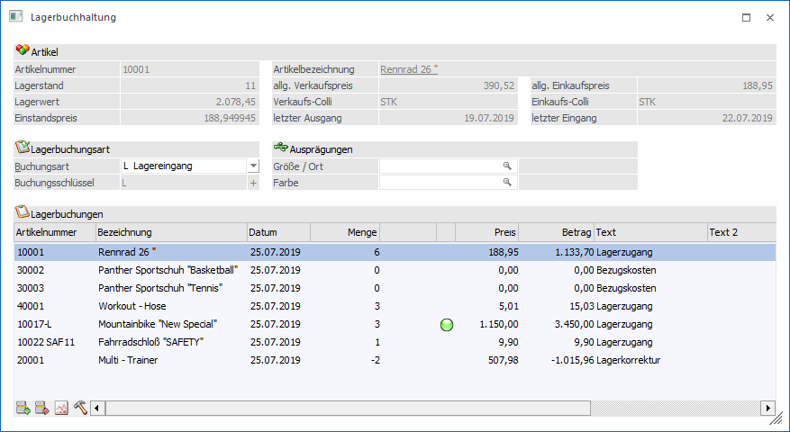
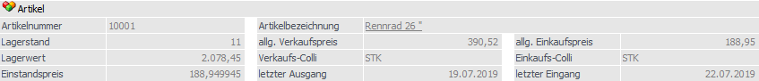
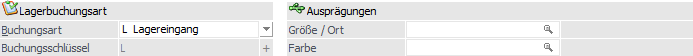
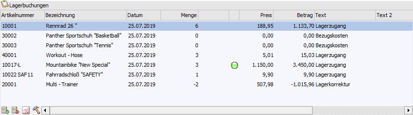
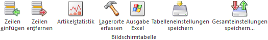

Im Menüpunkt…
1 WinLine FAKT
1 Erfassen
1 Lagerverwaltung
1 Lagerbuchhaltung
… können mengen- bzw. wertmäßige Lagerbewegungen erfasst werden, z.B.:
ü Lagerzugänge
ü Lagerabgänge
ü Verkäufe
ü Korrekturbuchungen

Das Fenster ist in die folgenden Bereiche untergliedert:
ü Artikelinformation
ü Lagerbuchungsoptionen
ü Tabelle "Lagerbewegungen"
Artikelinformation

In diesem Bereich werden alle relevanten Informationen zu dem aktuell ausgewählten Artikel (Tabelle "Lagerbewegungen") dargestellt.
Lagerbuchungsoptionen

In den folgenden Feldern müssen die Grundeinstellungen für die nachfolgenden Lagerbewegungen getroffen werden.
Ø Buchungsart
An dieser Stelle wird die Lagerbuchungsart gewählt, mit welcher die Artikel gebucht werden. Die Buchungsart beeinflusst u.a. die folgenden Punkte:
ü Buchungsschlüssel
ü Datum
ü Preis
ü Text
Hinweis
Die Anlage bzw. das Editieren der Buchungsarten findet im Programm "Lagerbuchungsarten" (WinLine FAKT - Stammdaten - Lagerbuchungsart) statt.
Achtung
Wurden bereits Lagerbewegungen erfasst, so hat die Änderung der Lagerbuchungsart ein Löschen der Tabelle zur Folge. Wurden bereits Buchungen erfasst, so erscheint zunächst eine Sicherheitsabfrage, ob die Buchungen wirklich gelöscht werden sollen.
Ø Buchungsschlüssel
Anhand des Buchungsschlüssels wird gesteuert, wie die Lagerbewegung erfolgen soll. Folgende Varianten sind möglich:
ü L = Lagerbewegung
Buchen von
Lagerzugang oder Lagerabgang, welche nicht durch Ein- oder Verkaufsbelege
erzeugt wurden.
ü L+ = Lagerzugang
ü L- = Lagerabgang
ü V = Verkauf
Buchen von
Verkäufen (Umsatz und Rohertrag im Artikelstamm und Kontenstamm ändern sich),
welche nicht durch Verkaufsbelege erzeugt wurden.
ü V+ = Verkauf
ü V- = Verkaufsstorno mit Warenrücknahme
ü P = Produktion
Buchen von
Lagerabgängen, insbesondere Sonderabgängen, die nicht durch Ein- oder
Verkaufsbelege verursacht wurden (firmeninterne Produktion, Schwund,
Filiallieferungen).
ü P+ = Lagerabgang
ü P- = Lagerzugang
Hinweis
Alle beschriebenen Varianten (Lagerzugang, Lagerabgang, Verkauf, Verkaufsstorno) beziehen sie jeweils auf die Eingabe von positiven Werten (Menge / Betrag).
Ø Ausprägungen
In diesen Feldern können Vorgaben für Ausprägung 1 (hier "Größe / Ort") und Ausprägung 2 (hier "Farbe") getätigt werden. Wird in weitere Folge ein unausgeprägter Hauptartikel erfasst, so wird automatisch auf die gewählte Ausprägung ausgeprägt.
Tabelle "Lagerbuchungen"

In der Tabelle stehen folgende Spalten zur Verfügung:
Ø Artikelnummer
An dieser Stelle wird die Artikelnummer eingegeben, für welche eine Lagerbewegung erfolgen soll.
Ø Bezeichnung
In der Spalte "Bezeichnung" wird die Bezeichnung des zuvor erfassten Artikels dargestellt.
Ø Datum
In dem Feld "Datum" muss das Datum angegeben werden, mit welchem die Lagerbewegung gebucht werden soll. Erfolgt die Eingabe eines Datums, welches außerhalb des Wirtschaftsjahres liegt, so erfolgt ein entsprechender Hinweis.
Ø Menge
In diesem Feld kann die zu buchende Menge eingegeben werden. Bleibt dieses Feld leer (auf 0), so kann trotzdem ein Betrag eingegeben werden. Hierdurch würde eine Lagerwertkorrektur durchgeführt werden.
Hinweis
Bei einer Lagerwertkorrektur ist die Einstellung der Preisnachkommastellen in der Artikelgruppe für einen Artikel unerheblich; es kann immer nur mit max. 2 Nachkommastellen gerechnet werden.
Ø Menge2
Wird ein Artikel erfasst, bei welchen die Menge2 definiert wurden, so kann in die Menge2 an dieser Stelle erfasst werden.
Ø Lagerorte
In der Spalte "Lagerorte" wird über den Status der Lagerorterfassung Auskunft gegeben:
ü  - Rot
- Rot
Die Menge der Lagerbuchung wurde
bisher nicht auf Lagerorte aufgeteilt.
ü  - Orange
- Orange
Ein Teil der Menge der
Lagerbuchung wurde nicht auf Lagerorte aufgeteilt.
ü  - Grün
- Grün
Die Menge der Lagerbuchung wurde
auf Lagerorte aufgeteilt.
Hinweis
Per Doppelklick auf das Kugel-Symbol kann das Fenster "Lagerorte erfassen" geöffnet werden.
Ø Preis
In der Spalte "Preis" wird der Einzelpreis automatisch vorgeschlagen. Grundlage hierfür ist die Definition des Bereichs "Einzelpreis" in der genutzten Lagerbuchungsart.
Ø Betrag
Hier wird der Betrag der Lagerbewegung angezeigt. Die Berechnung des Werts erfolgt über "Menge * Preis".
Hinweis
Wurde keine Menge erfasst (auf 0) oder der Preis steht auf "0,00", so kann der Betrag manuell erfasst werden.
Ø Text / Text 2
In diesen Feldern kann zu jeder Buchungszeile ein individueller Text eingegeben werden (Text = 50 Zeichen / Text 2 = 255 Zeichen).
Ø Charge-/Identnummer
Handelt es beim angegebenen Artikel um einen Artikel mit Chargen- oder Identnummern, so werden diese Nummer in der Spalte " Charge-/Identnummer" angezeigt.
Ø Freigabestatus
In dieser Spalte wird der Freigabestatus des jeweiligen Artikels angezeigt. Abhängig von der Einstellung in der Lagerbuchungsart wird dieser Freigabestatus auch abgeprüft.
Tabellenbuttons

Ø Zeilen einfügen
Mit Hilfe dieses Buttons kann eine neue Zeile in der Tabelle eingefügt werden.
Ø Zeilen entfernen
Durch Anwahl dieses Buttons kann eine Zeile in der Tabelle entfernt werden.
Ø Artikelstatistik
Durch Anwahl des Buttons "Artikelstatistik" erhält man eine Übersicht über die Verkaufs- bzw. Einkaufszahlen der letzten 5 Jahre, bezogen auf den aktuell ausgewählten Artikel (Tabelle "Lagerbewegungen").
Ø Lagerorte erfassen
Durch Anwahl des Buttons "Lagerorte erfassen" wird das Fenster "Lagerorte erfassen" geöffnet.
Ø Ausgabe Excel
Durch Anwahl des Buttons "Ausgabe Excel" wird der Inhalt der Tabelle nach Microsoft Excel übergeben.
Ø Tabelleneinstellungen speichern
Die Spalten einer Tabelle können grundsätzlich an beliebige Positionen verschoben, bzw. in der Breite entsprechend angepasst werden. Durch Anwahl des Buttons "Tabelleneinstellungen speichern" werden die Einstellungen benutzerspezifisch gespeichert und bei dem nächsten Aufruf des Programmpunktes wieder vorgeschlagen.
Ø Gesamteinstellungen speichern
Im Gegensatz zu "Tabelleneinstellungen speichern" können mit "Gesamteinstellungen speichern" mehrere Tabellenaufbauten gespeichert und nach Wunsch geladen werden. Zusätzlich werden Sonderfunktionen der Tabelle (z.B. "Spalte gruppieren") ebenfalls bei der Speicherung bedacht.
Buttons
Ø Ok
Durch Anwahl des Buttons "Ok" bzw. der Taste F5 werden die Lagerbewegungen gebucht.
Hinweis
Vor dem Buchen wird erneut geprüft, ob sich das jeweilige Datum passend zum Wirtschaftsjahr ist. Sollte dieses nicht der Fall sein, so wird eine entsprechende Meldung ausgegeben und der Fokus auf eine "fehlerhafte" Zeile gestellt.
Ø Ende
Durch Drücken des Buttons "Ende" oder der ESC-Taste wird das Fenster geschlossen und alle nicht gebuchten Lagerbewegungen verworfen.